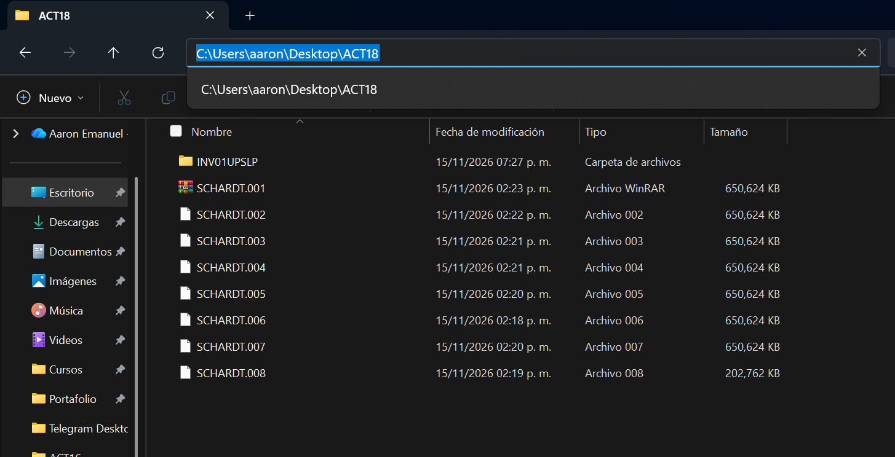
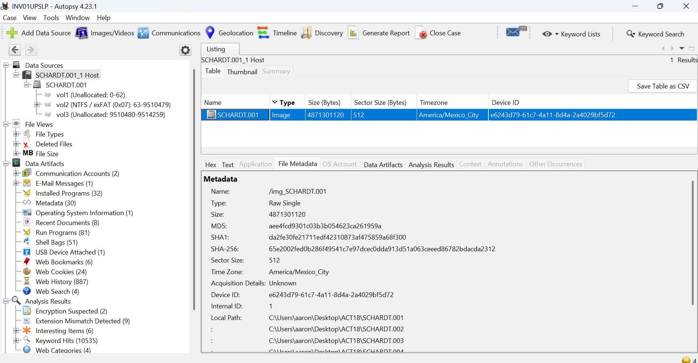
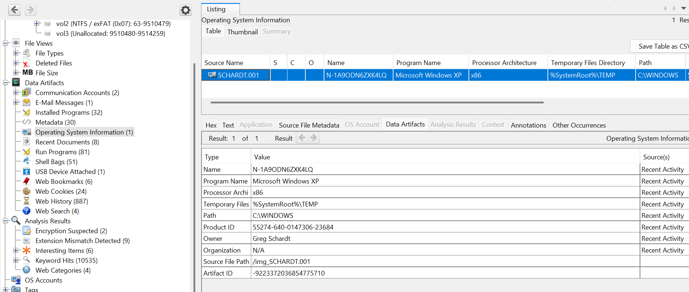
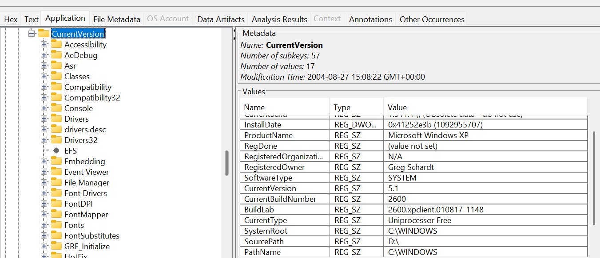
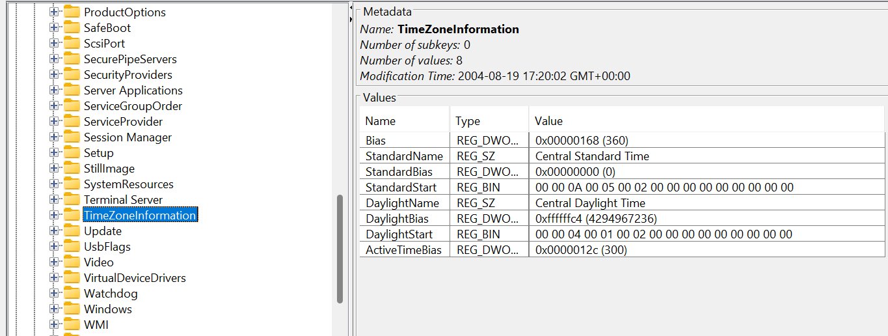
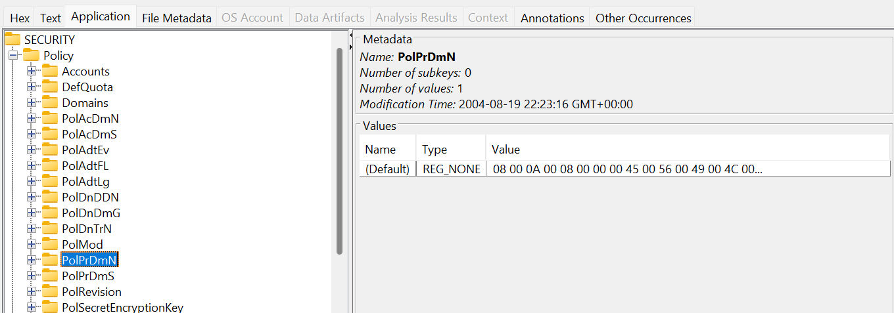
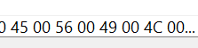
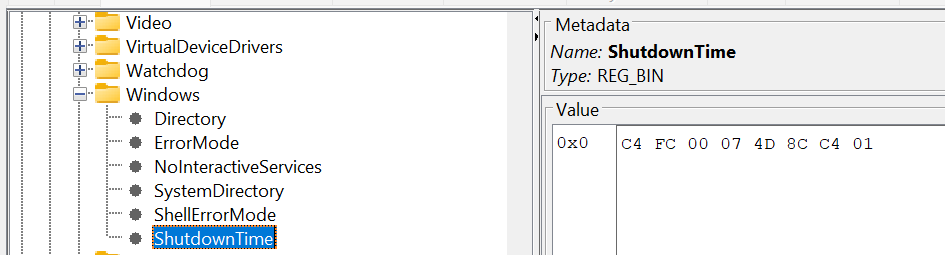
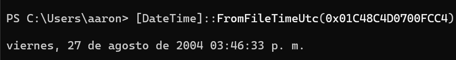
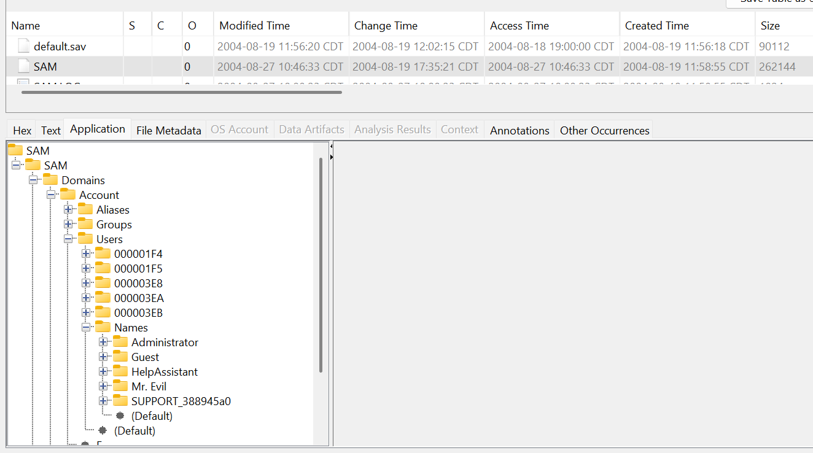

Actividad 18 — La huella digital de un cibercriminal
Análisis forense con Autopsy
ACTIVIDAD
Actividad 18
ALUMNO
Aaron Emanuel González Díaz (182447)
ASIGNATURA
CNO IV - Programacion IV
DOCENTE
Mtro. Servando López Contreras
1. Objetivo
Analizar con Autopsy la imagen forense del famoso caso de entrenamiento del NIST
(CFReDS) "Hacking Case", perteneciente a una laptop Dell CPi abandonada y vinculada al
sospechoso Greg Schardt, alias "Mr. Evil", sospechoso de interceptar tráfico
inalámbrico para robar números de tarjeta, usuarios y contraseñas.
Imagen analizada
SCHARDT.001–.008 (8 partes, ~4.5 GB) — caso "Hacking Case" del NIST CFReDS.
Herramienta
Autopsy 4.23.1 (Sleuth Kit / Basis Technology).
2. Conceptos de la Fuente de Datos
1.¿A qué se refiere el tipo de origen "Logical Files"?
Se refiere a agregar como fuente de datos archivos o carpetas individuales (no una imagen de disco completa), útil cuando solo se tiene un conjunto de archivos sueltos por analizar; Autopsy no revisa espacio no asignado ni archivos borrados con este tipo de origen.
2.¿A qué se refiere el tipo de origen "Local Disk"?
Se refiere a un dispositivo de almacenamiento físico (disco o USB) conectado directamente al equipo del examinador, que Autopsy analiza en vivo sin crear antes una imagen; se recomienda usar un bloqueador de escritura para no alterar la evidencia.
3. Análisis Forense con Autopsy
Ubicación de los ficheros de la evidencia

Figura 1. Carpeta ACT18 en el escritorio con las 8 partes de la evidencia (SCHARDT.001–.008) y el caso INV01UPSLP ya creado.
1.¿Cuál es el hash de la imagen? ¿Coinciden el hash de adquisición y verificación?
MD5:aee4fcd9301c03b3b054623ca261959a

Figura 2. Pestaña File Metadata de SCHARDT.001, con el hash MD5/SHA-1/SHA-256 calculado.
El hash de adquisición es el valor calculado al crear la imagen a partir del disco original, y el de verificación es el que se calcula después sobre la imagen para confirmar que no ha cambiado. En esta práctica se usó como hash de adquisición el publicado oficialmente por el NIST (mismo valor) y como hash de verificación el calculado por Autopsy mediante el módulo Hash Lookup. SÍ COINCIDEN, por lo que la integridad de la imagen quedó confirmada.
2.¿Qué sistema operativo se utilizó en la computadora?
Microsoft Windows XP, de 32 bits (arquitectura x86).

Figura 3. Artefacto "Operating System Information" generado por el módulo Recent Activity.
3.¿Cuándo fue la fecha de instalación?
19 de agosto de 2004, 17:48:27 (hora central de verano, CDT, UTC−5) — equivalente a las 22:48:27 UTC.

Figura 4. Valor InstallDate (0x41252e3b = 1092955707, timestamp Unix) en software\Microsoft\Windows NT\CurrentVersion.
4.¿Cuál es la configuración de zona horaria?
Hora central de Estados Unidos: Central Standard Time (UTC−6) en invierno, con cambio automático a Central Daylight Time (UTC−5) en verano (Bias 360 / ActiveTimeBias 300 minutos).

Figura 5. Clave TimeZoneInformation en system\ControlSet001\Control.
5.¿Quién es el propietario registrado?
Propietario registrado: Greg Schardt. Se obtiene del campo Owner del artefacto "Operating System Information" (Figura 3), que corresponde al valor RegisteredOwner de la clave CurrentVersion del registro.
6.¿Cuál es el nombre de la cuenta de la computadora?
Nombre de la cuenta del equipo: N-1A9ODN6ZXK4LQ. Visible también en el campo Name del mismo artefacto "Operating System Information" (Figura 3), y corresponde al valor ComputerName del registro.
7.¿Cuál es el nombre de dominio principal?
El archivo SECURITY, en system32\config, clave Policy\PolPrDmN, contiene el nombre de dominio principal codificado en bytes.

Figura 6. Valor PolPrDmN dentro de SECURITY\Policy.

Figura 7. Bytes decodificados como texto UTF-16LE: 45 00 56 00 49 00 4C 00 = "EVIL".
Dominio principal: EVIL.
8.¿Cuándo fue la última fecha/hora registrada en que se apagó la computadora?
El archivo system, clave ControlSet001\Control\Windows\ShutdownTime, contiene un valor FILETIME de Windows (8 bytes, byte menos significativo primero):

Figura 8. Valor ShutdownTime (bytes C4 FC 00 07 4D 8C C4 01).

Figura 9. Conversión en PowerShell: [DateTime]::FromFileTimeUtc(0x01C48C4D0700FCC4).
Última hora de apagado: 27 de agosto de 2004, 10:46:33 (CDT) — 15:46:33 UTC.
9.¿Cuántas cuentas están registradas (número total)?
El archivo SAM, clave SAM\Domains\Account\Users\Names, lista una subclave por cada cuenta de usuario del sistema.

Figura 10. Subclaves dentro de SAM\Domains\Account\Users\Names.
Número total de cuentas registradas: 5 (Administrator, Guest, HelpAssistant, Mr. Evil y SUPPORT_388945a0).